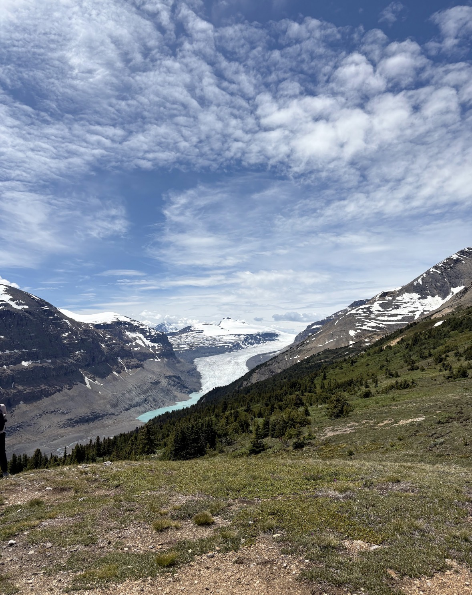
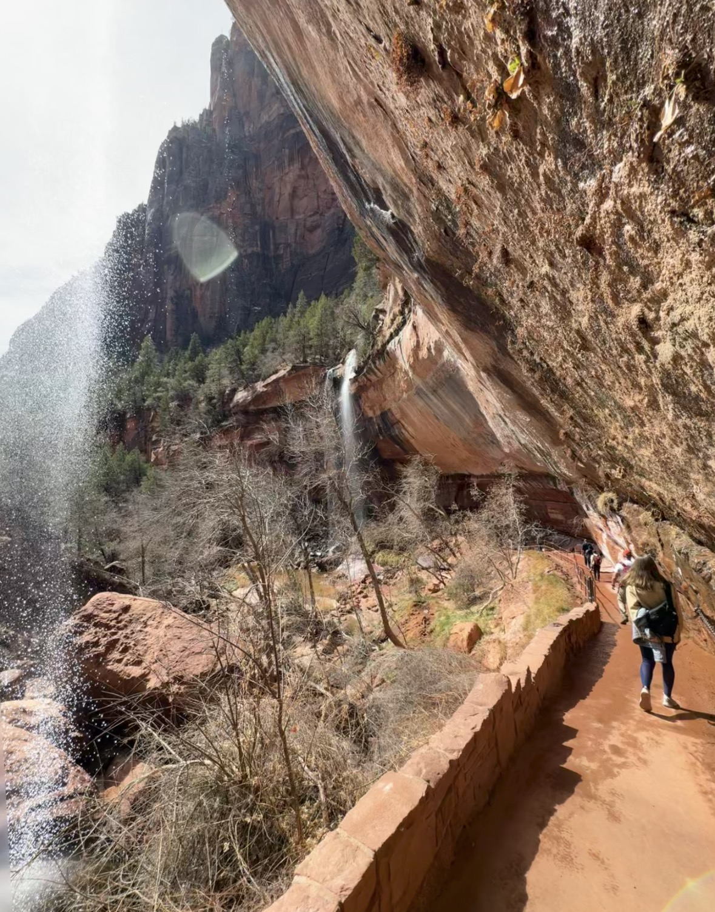
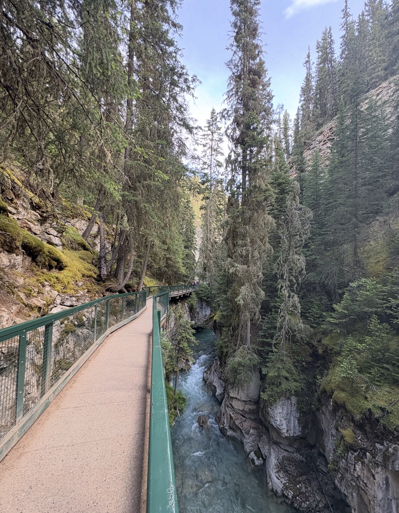

Parker's Ridge Trail
HardGlacier views at the top with wildflowers along the way
📍 Banff, Canada • 4.3 miles
A few slips along the way were worth it!
Trails I love and campus spots where I actually get work done
My favorite trails that are absolutely worth the journey

Glacier views at the top with wildflowers along the way
📍 Banff, Canada • 4.3 miles
A few slips along the way were worth it!

Walking behind the lower waterfall was magical
📍 Zion National Park • 3 miles
Perfect difficulty for maintaining momentum throughout
Incredible views and heights at sunrise
📍 Zion National Park • 4 miles
Sunrise hike was a major serotonin boost

That signature Banff water color up close
📍 Banff, Canada • 1.6 miles
Very accessible and perfect for all levels
Comfortable difficulty with wildlife sightings
📍 Zion National Park • 3.3 miles
Saw a deer on this hike!
A side of me that loves singing, building beats, and mixing creativity with code
I took a music technology class at Georgia Tech where I learned to code music with Python and explore sound in a more technical way.
I’ve been playing piano and singing for as long as I can remember, so this felt like the perfect blend of creativity and code.
A few GarageBand pieces I’ve made and wanted to share here.
My go-to places for getting work done on campus
Vibe 🤫 Silent
Power ⚡ High availability
Best time 🕒 2 PM – 6 PM
Vibe 🔊 Lively but workable
Power ⚡ Moderate
Best time 🕒 Morning
Vibe 🤫 Quiet zones
Power ⚡ High availability
Best time 🕒 Afternoon
Vibe 🤫 Silent
Power ⚡ Moderate
Best time 🕒 Weekday afternoons
Vibe 🔇 Focus-friendly
Power ⚡ High availability
Best time 🕒 Anytime
Vibe 🤫 Silent
Power ⚡ High availability
Best time 🕒 Evening
Vibe 🤫 Silent
Power ⚡ Moderate
Best time 🕒 Late night
Vibe 💻 Dev-friendly
Power ⚡ High availability
Best time 🕒 Evening
Vibe 👥 Collaborative energy
Power ⚡ High availability
Best time 🕒 Afternoon
Vibe 🔊 Lively
Power ⚡ Limited seating
Best time 🕒 Morning
Vibe ☕ Cozy
Power ⚡ Some outlets
Best time 🕒 Between classes